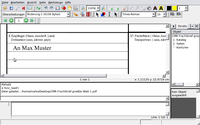
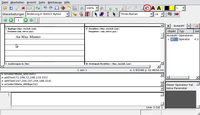
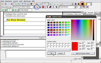
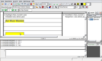

PDFedit
Archivierte Anleitung
Dieser Artikel wurde archiviert, da er - oder Teile daraus - nur noch unter einer älteren Ubuntu-Version nutzbar ist. Diese Anleitung wird vom Wiki-Team weder auf Richtigkeit überprüft noch anderweitig gepflegt. Zusätzlich wurde der Artikel für weitere Änderungen gesperrt.
Zum Verständnis dieses Artikels sind folgende Seiten hilfreich:
PDFedit  ist ein Editor für PDF-Dateien. Das auf der Grafikbibliothek Qt basierende Programm wird in Tschechien entwickelt, besitzt aber (auch) eine deutschsprachige Oberfläche. PDFedit beherrscht u.a. das Einfügen von anderen PDF-Dateien und den Export in das Format XML. Es bietet eine Baumansicht der Datei sowie ein Kommandozeilen-Werkzeug.
ist ein Editor für PDF-Dateien. Das auf der Grafikbibliothek Qt basierende Programm wird in Tschechien entwickelt, besitzt aber (auch) eine deutschsprachige Oberfläche. PDFedit beherrscht u.a. das Einfügen von anderen PDF-Dateien und den Export in das Format XML. Es bietet eine Baumansicht der Datei sowie ein Kommandozeilen-Werkzeug.
Da PDFedit Zugang zur gesamten internen Datenstruktur von PDFs eröffnet, ist mit diesem Programm vieles änderbar, allerdings nur für versierte Nutzer. Für einfachere Aufgaben wie das Ausschneiden von Seiten oder ähnliches empfiehlt es sich, andere Programme zu nutzen, die im Artikel PDF aufgelistet sind.
Installation¶
Das Programm lässt sich bis einschließlich Ubuntu 12.04 direkt aus den offiziellen Paketquellen installieren [1]:
pdfedit (universe)
 mit apturl
mit apturl
Paketliste zum Kopieren:
sudo apt-get install pdfedit
sudo aptitude install pdfedit
Benutzung¶
 Nach der Installation findet man bei Ubuntu-Varianten mit einem Anwendungsmenü einen neuen Eintrag unter "Grafik -> PDF Editor" [2].
Über das Menü und die Symbolleiste kann man nun PDF-Dokumente bearbeiten. Das Öffnen und Speichern der Dateien erfolgt wie in anderen Programmen auch über das Menü "Datei". Mit dem Menü "Ansicht" kann man im Dokument navigieren und verschiedene Programmfenster wie die Kommandozeilenansicht und den Strukturbaum aus- und einblenden. Über "Werkzeuge" ruft man die Optionen auf. Außerdem kann man hier andere PDF-Dateien in das geöffnete Dokument einfügen und die Datei in das Format XML exportieren.
Das Menü "Seite" enthält alle Optionen, die die Darstellung einer Seite betreffen. Hier kann man u.a. die Seite drehen, als Bild abspeichern, Linien einfügen oder Text hervorheben. Mit "Bearbeiten" kann man Objekte oder Text auswählen sowie Farben und Schriftarten setzen. "Hilfe" ruft die (englischsprachige) Hilfe auf und zeigt Informationen über das Programm PDFedit selbst an.
Viele der oft genutzten Menüpunkte sind auch bequem über die Symbolleiste erreichbar. Einzelne Teile kann man mittels Rechtsklick auf die Symbolleiste und anschließender Auswahl ein- und ausblenden.
Eine Zeile eintragen¶
Hinweis:
Es sollte immer mit einer Kopie eines Dokuments gearbeitet werden!
 Nach dem man das PDF-Dokument geöffnet hat, können bequem Zeilen eingetragen oder ausgefüllt werden. Hierzu wählt man zuerst die Schriftart aus, die verwendet werden soll. Dabei kann auch gleich die Schriftgröße gewählt werden.
Um Text zu schreiben, wählt man mit einem  -Klick die Schaltfläche mit dem kleinen (a) (im Beispielbild rot umkreist). Die Schaltfläche bleibt dann gedrückt, nun den Mauszeiger an die Stelle im Dokument bewegen, an der etwas ausgefüllt werden soll. Soll in einer Zeile etwas eingetragen werden, wird mit dem Mauszeiger ca. 1mm über der unteren Linie mit einem -Klick das Schreibfeld aktiviert. Der Cursor blinkt dann dort, und es kann eingetragen werden (im Beispielbild "An Max Muster"). Nachdem die Zeile ausgefüllt worden ist, wird die Eintragung mit der
⏎ bestätigt.
-Klick die Schaltfläche mit dem kleinen (a) (im Beispielbild rot umkreist). Die Schaltfläche bleibt dann gedrückt, nun den Mauszeiger an die Stelle im Dokument bewegen, an der etwas ausgefüllt werden soll. Soll in einer Zeile etwas eingetragen werden, wird mit dem Mauszeiger ca. 1mm über der unteren Linie mit einem -Klick das Schreibfeld aktiviert. Der Cursor blinkt dann dort, und es kann eingetragen werden (im Beispielbild "An Max Muster"). Nachdem die Zeile ausgefüllt worden ist, wird die Eintragung mit der
⏎ bestätigt.
Zum Löschen einer Eingabe wird der schwarze Pfeil (unter dem Feld "Anzeigegröße 100%") mit der angeklickt und dann auf einen Buchstaben der Zeile, die zu entfernen ist, geklickt. Die Zeile wird dann umrahmt und gelblich markiert dargestellt, mit der
Entf -Taste kann die Zeile gelöscht werden.
Die Schriftfarbe ändern¶

Um einer eingetragenen Zeile eine andere Farbe zu geben, wird zu erst mit einem -Klick auf den schwarzen Pfeil (unter dem Feld "Anzeigegröße 100%") der Mauszeiger zum Markieren eingestellt. Jetzt mit dem Mauszeiger auf einen Buchstaben, in der Zeile mit der klicken, die farblich geändert werden soll. Diese Zeile wird dann gelblich markiert dargestellt. Nachdem die Zeile markiert ist, wird einmal mit dem Mauszeiger auf die Schaltfläche für die Farbauswahl (im Beispielbild rot umkreist) mit der geklickt. Es öffnet dann das Fenster für die Farbauswahl. Im Fenster die Farbe wählen und mit "OK" bestätigen. Nun schließt sich das Fenster, und die gewählte Farbe wird oben angezeigt. Zum Abschluss mit einem -Klick auf die Schaltfläche "Farbe setzen" (im Beispielbild blau umkreist) klicken. Die Farbe wird gesetzt und die Markierung aufgehoben.
Eine eingetragene Zeile verschieben¶

Es kann vorkommen, dass eine oder mehrere eingetragene Zeilen etwas verschoben werden sollen. Es wird zu erst mit einem -Klick auf den schwarzen Pfeil (unter dem Feld "Anzeigegröße 100%") der Mauszeiger zum Markieren eingestellt. Jetzt mit dem Mauszeiger auf einen Buchstaben, in der Zeile mit der klicken, die verschoben werden soll. Diese Zeile wird dann gelblich markiert dargestellt. Nun mit dem Mauszeiger über die markierte Zeile schieben, der Mauszeiger ändert sich in eine Hand. Nun die gedrückt halten und die Zeile an die zu setzende Stelle verschieben. Zu besseren Darstellung bleibt die Zeile auch in der Bewegung sichtbar gelblich markiert. Die wieder loslassen und nach einem kurzen Moment wird die Zeile an der neuen Position gesetzt.
Problembehebung¶
Es kann vorkommen, dass nach der Änderung eines Dokuments beim Öffnen mit Archiv/Adobe Reader eine Fehlermeldung gezeigt wird (Fehler auf dieser Seite). Ggf. tritt das Problem auch bei anderen PDF-Programmen (z.B. Xpdf) auf. Wenn das Dokument aber das gewünschte Aussehen hat, kann die Fehlermeldung ignoriert werden.
Die Bearbeitung erweist sich oft als recht zäh; das Programm reagiert z.B beim Einfügen von Text etliche Sekunden lang gar nicht.
 Übersichtsseite
Übersichtsseite- Erstellt mit Inyoka
-
 2004 – 2017 ubuntuusers.de • Einige Rechte vorbehalten
2004 – 2017 ubuntuusers.de • Einige Rechte vorbehalten
Lizenz • Kontakt • Datenschutz • Impressum • Serverstatus -
Serverhousing gespendet von